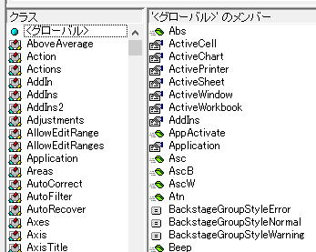
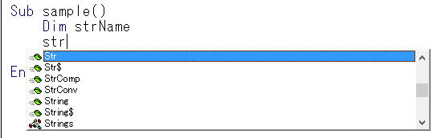
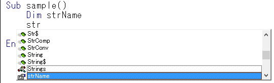
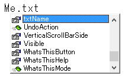

変数とプロシージャーの命名について
VBAを習い始めると、「変数」について学びます、
※職業プログラマーさんは、所属する組織やクライアントの規約等に従うまでです。
・先頭には、数字やアンダーバー(_)は使えない、英文字か漢字で始める
・使えない予約語がある
・長さは半角で255文字まで
予約語とは、VBAステートメント、キーワード、演算子、システム日時等
if,else,with,true,date
VBAが持つ、関数名やオブジェクト名は使わない方が良いです、いや、使ってはダメですね。
ここに候補表示される単語です、
オブジェクトブラウザ(F2)で見ることも出来ます。

ここまで学んで、では、先の「date」は何という名前を付けたらよいのか、
日付を入れる変数なのだから、dateがわかり易いはずだが・・・
少し悩んで、
hizuke
と言うような変数名にするのは良くあることで、決しておかしくはないし、わかり易さと言う点では評価できる命名です。
VBAに限らず、プログラミング全版における命名方法について調べてみましょう。
アプリケーションハンガリアン、システムハンガリアン
に分けられるが、そこまで意識する必要はないでしょう。
変数名の先頭に、ある決まった文字列を書くという認識で良いです。
良く行われるのが、データ型（Long,String等）の略称を先頭に付けます。
lngCount,strName
等々になります。
3文字を付ける場合が多いですが、1文字で
lCount,sName
このようにしてもよいです。
| Integer | int |
| Long | lng |
| Single | sng |
| Double | dbl |
| String | str |
| Date | dtm |
| Boolean | bln |
| Variant | var |
この記法は、大きく2通りに分かれます。
アッパーキャメルケース（パスカルケース）：複合語の先頭を、大文字で書き始める。
ローワーキャメルケース（キャメルケース）：複合語の先頭を、小文字で書き始める。
要は、単語の先頭を大文字にすることで読みやすくするという事です。
deliverydate
これは、
DeliveryDate
とすれば読みやすくなります。
これは、
delivery_date
とします。
漢字名称について
特に漢字を使ったからと言って、誤作動があるわけではないし、
読みやすさという観点では、これ以上の読みやすさはないでしょうね。
しかし、そもそもタイピングが面倒ですよね。
私は、特殊な場合を除いて漢字は使わないようにはしています。
特殊な場合と言うのは、英語表記では分かりずらい場合です。
シート数が多いと命名しずらく、また、分かりずらくなってしまいます。
そのような場合は、
sht,sh,ws
等の接頭文字に続けて、漢字でシート名を付けたりします。
ws入力,ws出力
のような名前です。
このようにすることで、変数の使用間違いを防止できますので、この場合は漢字を使います。
ここはもう読みやすさだけの問題ではないかと思います。
念の為申し上げるなら、私もVB.NETを書くときは漢字名称を使う事はほとんどありません。
私が好んで使う方法
スネーク記法は、名前が長くなってしまうので、個人的にはよほど特殊な場合以外は使いません。
ハンガリアン記法とキャメル記法を使い分け、または複合使用しています。
変数名は、ハンガリアンが基本
プロシージャー名は、キャメルが基本
簡単に言うとこんな感じです。
変数なら、
dtmDate,dtDate,dDate
プロシージャーなら、
getDate,setDate
のようになります。
接頭文字を付けるハンガリアンは、予約語を気にしなくて済むという点で名づけしやすいものです。
ハンガリアン記法に対する批判について
特に接頭文字として、データ型を付けることに対しての批判が多いように見受けられます。
しかし、それはプログラミング言語（開発環境）に依存するものであり、一般論として語っても意味のないものです。
例えば、
Visual StudioのVB(VB.NET)であれば、確かにデータ型を付けたハンガリアンはあまり意味がないかもしれません。
変数にマウスオーバーするだけでデータ型が分かるのですから・・・
しかし、それとVBAを同列に語っても意味がないことは明らかです。
プログラミング初心者が、データ型を意識できるようになったとき、
一度はハンガリアン記法で、接頭文字にデータ型を付けて書いてみることは、
プログラミング習得の過程として極めて重要な事です。
Ctrl+Spaceで候補表示した時に探しやすいというのもあります。

少し↓にすると、

Ctrl+Spaceの後、接頭文字を打って↓で探すことが容易になりますので、
VBEをスクロールして変数名を確認したり、打ち間違い防止にもなります。
特に、
ユーザーフォーム作成時は、コントロールの命名にはハンガリアンが良いです。
txt○○
cmb○○
等々とすることで、
Me.
に続けて、接頭文字を打つことで、コントロール名が候補表示されます。

変数名やプロシージャー名を見ると、それを書いた人の力量もある程度は計り知れるものです。
それくらい、人によって使い方が変わるものであり、使い方は千差万別であるとも言えます。
ただし、慣用的に使われているものは、それにならう事も必要です。
それは、他人が見たときにわかり易いという事になるからです。
例えば、
Forで使うカウンター変数は、
i
を使うのが一般的で、無理に別のものを使うべきではありません。
2つ以上必要な場合は、
i,j,k
i1,i2,i3
等が良いでしょう。
当然、j,k等でも、i2,i3でも良いのですが、
ii
何てのも良く（たまに）使われます。
iiなんてみると、おー、なんか知らんけどすごい・・・
みたいな感じを受けるとか受けないとか（笑）
個人的には、上品な使い方とは思っていませんけどね。
Dim isOk As Boolean
OKの時にTrue、以外の時はFalse
これを使う場合は、くれぐれもTrueとFalseを逆に使ったりしないようにして下さい。
isのほかに、canやhasを使い分けられると、もう完璧です。
これを見せられれば、こいつやるなーとなること間違いなしです。
もっとも、ここまでくると命名の問題というより、プログラミング技術そのものが問題になってきますが。
メソッドなので、基本は動詞を使います。
set
get
delete
add
put
等々を先頭に付けて、キャメルケース（最初の動詞は小文字で、その後の単語は大文字で始める）で書きます。
それなりに恰好良く見えるはずです（笑）
パスカルケース（複合語の先頭を全て大文字で書き始める）になっていますので、
キャメルケース（最初の動詞は小文字）にすることで、システムとの違いも明確に出来るのでお勧めです。
グループでコードを共有する場合は、最低限の規則は作るべきでしょう。
ただしその規則は、世間一般でどうかという事より、グループの人たちが間違いなく理解し実践できる規約が良いのです。
無理に上級ぶった規則を作っても、プログラミングの作業効率を極端に下げる結果となっては本末転倒です。
（もちろん、作業効率を下げてでも品質を高めたいという場合もあります。）
個人で作成するだけなら、自分規則を作れば良いという事になります。
プログラミングの習得過程では、その自分規則が徐々に変化していきます。
その変化こそが、プログラミング技術が向上しているという事の証でもあります。
多くのプログラマーがこれを経験し、プログラミング技術を向上させていったのです。
しかし、どの世界でも同じですが、基本ほど難しいものはありません。
基本の立ち居振る舞いで、その人の力量が分かってしまうものです。
少しだけ背伸びをして、ちょっとだけ恰好付けてVBAを書いてみるのも良い勉強になるはずです。
同じテーマ「マクロVBA技術解説」の記事
論理積（And）論理和（Or）と真（True）偽（False）の判定
If条件式のいろいろな書き方：TrueとFalseの判定とは
VBAでの括弧()の使い方、括弧が必要な場合
VBAにおけるピリオドとカンマとスペースの使い方
変数とプロシージャーの命名について
文字列置換の基本と応用（Replace）
データクレンジングと名寄せ
ForとIfのネストこそがVBAの要点
For Next の使い方いろいろ
複数条件判定を行う時のコツ
新着記事NEW ・・・新着記事一覧を見る
VBA100本ノック 100本目：WEBから100本ノックのリストを取得｜VBA練習問題（3月3日）
VBA100本ノック 99本目：自動席替え（行列と前後左右が全て違うように）｜VBA練習問題（3月2日）
VBA100本ノック 98本目：席替えルールが守られているか確認｜VBA練習問題（3月1日）
VBA100本ノック 97本目：Accessデータを取得（グループ集計）｜VBA練習問題（2月27日）
VBA100本ノック 96本目：Accessデータを取得（マスタ結合&抽出）｜VBA練習問題（2月26日）
VBA100本ノック 95本目：図形のテキストを検索するフォーム作成｜VBA練習問題（2月24日）
VBA100本ノック 94本目：表範囲からHTMLのtableタグを作成｜VBA練習問題（2月23日）
VBA100本ノック 93本目：複数ブックを連結して再分割｜VBA練習問題（2月22日）
VBA100本ノック 92本目：セルの色を16進で返す関数｜VBA練習問題（2月20日）
VBA100本ノック 91本目：時間計算（残業時間の月間合計）｜VBA練習問題（2月19日）
アクセスランキング ・・・ ランキング一覧を見る
1.最終行の取得（End,Rows.Count）｜VBA入門
2.RangeとCellsの使い方｜VBA入門
3.変数宣言のDimとデータ型｜VBA入門
4.マクロって何？VBAって何？｜VBA入門
5.Range以外の指定方法（Cells,Rows,Columns）｜VBA入門
6.セルのコピー&値の貼り付け（PasteSpecial）｜VBA入門
7.繰り返し処理（For Next)｜VBA入門
8.セルに文字を入れるとは（Range,Value）｜VBA入門
9.マクロはどこに書くの（VBEの起動）｜VBA入門
10.とにかく書いてみよう（Sub,End Sub）｜VBA入門
- ホーム
- マクロVBA応用編
- マクロVBA技術解説
- 変数とプロシージャーの命名について
このサイトがお役に立ちましたら「シェア」「Bookmark」をお願いいたします。
記述には細心の注意をしたつもりですが、
間違いやご指摘がありましたら、「お問い合わせ」からお知らせいただけると幸いです。
掲載のVBAコードは動作を保証するものではなく、あくまでVBA学習のサンプルとして掲載しています。
掲載のVBAコードは自己責任でご使用ください。万一データ破損等の損害が発生しても責任は負いません。